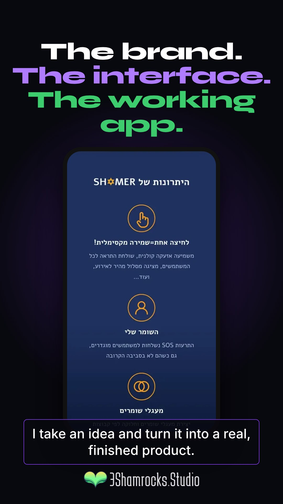

3Shamrocks · new site intro
Studio black, purple light sweep, green line. Calm, confident, premium. Line from the site: "I take an idea and turn it into a real, finished product."

SH✡MER
v2 (your note: more dramatic and serious). 5 seconds, cinema letterbox. Out of the dark under a single spotlight, the badge slowly rises from black, a metal glint, then deep impact and two slow orange rings, wordmark and שומר אחי אנוכי fade in. Low drone and one heavy hit, no bounce.

LickPick · MTV 90s
v2 (your note: 90s grunge rock'n'roll, rebellious, high energy and groove). Cut on every beat at 120 bpm with ransom-note letters: NO / RULES / JUST / LICKS, then the pick slams onto torn yellow paper and pumps on the beat, NO RULES and JUST LICKS stamps, photocopy grain and film scratches. Sound: kick, snare, hats and a distorted power-chord riff.

Trashure Hunters
v2 (your note): outlines removed from the slogan and headline, now solid letters with a soft shadow. Comic sun-rays, the monster bounces in with sparkle chimes, slogan in game type: "Clean the World. Win the Game." Playful, for families and kids.